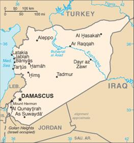
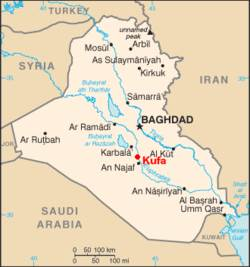
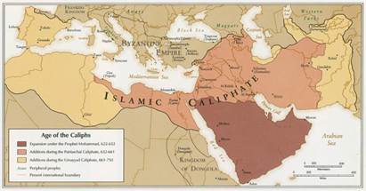

I. CÁC NGƯỜI NỐI NGHIỆP: 632-660
II. TRIỀU ĐẠI OMEYYADE: 661-750
II. TRIỀU ĐẠI ABDASSIDE: 750-1058
Mahomet không chỉ định một người nào để nối nghiệp cả, nhưng ông đã lựa Abu Bekr (573-634) để điều khiển các buổi cầu nguyện ở thánh thất[50] Médine; và sau vài cuộc lộn xộn, tranh giành, các thủ lĩnh Hồi giáo quyết định lựa Abu Bekr làm vị calife đầu tiên của họ. Tiếng Khalifat (có nghĩa là đại diện) mới đầu chỉ là một tên để gọi chứ không phải là một chức vị; chức vị chính thức là amir al-muminin – “đạo trưởng”. Ali, em thúc bá và là con rễ của Mahomet thất vọng vì không được chọn, trong sáu tháng không chịu tuân lệnh. Abbas, chú của Ali và Mahomet, cũng oán hận. Do sự bất hoà đó mà phát sinh ra khoảng một chục chiến tranh, ra triều đại Abbasside và một sự chia rẽ giáo phái hiện nay còn làm xáo động thế giới Hồi giáo.
Hồi đó Abu Bekr năm mươi chín tuổi, nhỏ con, mảnh khảnh mà mạnh, tóc thưa, râu trắng nhuộm đỏ, tính tình giản đi, điều độ, đại lượng nhưng cương quyết; ông đích thân lo việc hành chính, tư pháp, xử kiện, không xong thì không chịu nghỉ ngơi; ông làm việc không lĩnh lương, tới khi dân chúng buộc ông lĩnh ông mới lĩnh, nhưng rồi lại lập di chúc trả vào quốc khố tất cả số lương ông đã lĩnh được. Các bộ lạc Ả Rập cho sự khiêm tốn là một sự nhu nhược, thiếu nghị lực; họ miễn cưỡng theo Hồi giáo, không thâm tín, cho nên chẳng bao lâu quên đạo đó đi và không nộp những thuế mà Mahomet đã bắt họ phải chịu nữa. Abu Bekr đòi gắt, họ bèn kéo quân tấn công Médine. Chỉ trong một đêm Abu Bekr thành lập xong một đạo quân, trước hừng đông ra ngoài thành tấn công bọn phiến loạn, chúng bại tẩu (632). Khalid ibn al Walid, viên tướng Ả Rập giỏi nhất, tàn bạo nhất, được lệnh dẹp các bộ lạc bướng bỉnh, bắt họ phải theo Hồi giáo, phải ăn năn và nộp cống.
Có thể sự chia rẽ nội bộ đó là một trong nhiều hoàn cảnh thúc đẩy người Ả Rập xăm chiếm Tây Á. Khi Abu Bekr lên cầm quyền, không một thủ lĩnh Hồi giáo nào có cái ý khuếch trương đất đai như vậy. Một bộ lạc Ả Rập ở Syrie cự tuyệt Kitô giáo và Byzance, chống cự các đạo quân của đế quốc Byzance và cầu viện với Hồi giáo. Abu Bekr gởi quân tới tăng viện và khuyến khích tinh thần chống Byzance ở Ả Rập; có lẽ nhờ chống với ngoại nhân mà Ả Rập hoá ra đoàn kết, thống nhất. Dân chúng Ả Rập ở phía Bắc, vì đói và quen với trận mạc, đầu quân rất đông trong những chiến tranh bề ngoài có vẻ hạn chế đó, và bọn người hoài nghi ở sa mạc đó hăng say hy sinh tính mạng cho Hồi giáo mà chính họ không hay.
Sự bành trước của Ả Rập có nhiều nguyên nhân. Nguyên nhân kinh tế: chính quyền suy nhược trong thế kỉ trước khi Mohamet ra đời, do đó mà hệ thống dẫn thuỷ nhập điền của Ả Rập bị huỷ hoại; đất đai sản xuất rất ít mà dân số thì tăng lên; cho nên các đạo quân Ả Rập hăng hái chiếm các khu đất trồng trọt được. Nguyên nhân chính trị: Byzance và Ba Tư chiến đấu với nhau, tàn phá lẫn nhau, mà kiệt lực, suy tàn, gợi lòng tham của Ả Rập; thuế má tăng lên, chính quyền Byzance và Ba Tư suy yếu, không bảo vệ được dân chúng. Sự giống nhau về chủng tộc cũng là một nguyên nhân nữa: xứ Syrie và xứ Méssopotamie có nhiều bộ lạc Ả Rập sẵn sàng thừa nhận luật pháp rồi tín ngưỡng của các đạo quân Ả Rập xâm lăng. Lại thêm nguyên nhân tôn giáo: Byzance đàn áp các người theo theo phái “Kitô nhất tính”[51], phái Cảnh giáo và các giáo phái khác làm cho một thiểu số khá đông dân chúng Syrie và Ai Cập, với một số lính đồn thú sinh ra bất bình. Cuộc xăm lăng càng tiến thì nguyên nhân tôn giáo càng hoá mạnh; các thủ lĩnh Hồi giáo đều là môn đồ nhiệt thành của Mahomet, lúc đó cầu nguyện nhiều hơn là ra trận, và đồng thời tiêm cho binh sĩ một lòng cuồng tín, coi sự chết trong các cuộc thánh chiến là một cách để lên thiên đường. Luân lí Kitô giáo và chế độ tăng viện đã làm suy giảm tinh thần hiếu chiến ở miền Cận đông, mà trái lại, phong tục Ả Rập cùng lời giáo huấn của Mahomet lại đề cao tinh thần đó. Quân đội Ả Rập có tinh thần kỉ luật hơn, tướng lĩnh chỉ huy giỏi hơn; họ có thể nhịn đói mà chiến đấu, và họ phải thắng thì mới khỏi chết đói. Nhưng quân đội Ả Rập không phải là dã man. Abu Bekr trong một tuyên ngôn đã khuyên họ: “Sĩ tốt phải công bằng, phải can đảm; thà chết chứ không chịu lùi, phải khoan dung, đừng giết người già, đàn bà và trẻ con. Đừng phá hoại các cây ăn trái, mùa màng và gia súc. Phải giữ lời, cả với kẻ thù. Đừng ức hiếp các nhà tu hành sống ẩn dật, nhưng phải bắt buộc các dân tộc khác theo Hồi giáo hoặc phải nộp cống cho ta, nếu họ không chịu thì giết”. Vậy kẻ thù không nhất thiết bị giết nếu không theo Hồi giáo, mà có thể nộp cống để chuộc mạng. Sau cùng còn nguyên nhân võ bị nữa: khi đạo quân tăng lên, gồm những lính đói khát hoặc tham lam, thì tự nhiên xảy ra vấn đề phải chiếm thêm đất để nuôi họ, trả lương cho họ, thành thử đã tiến rồi thì phải tiến nữa, thắng một trận thì phải thắng thêm một trận nữa, cho tới khi cuộc xâm lăng của Ả Rập, mau hơn các cuộc xâm lăng của La Mã hồi trước và lâu dài hơn các cuộc xâm lăng của Mông Cổ sau này, thành một trong những vũ công lạ lùng nhất trong lịch sử.
Đầu năm 633, Khalid đã “bình định” xong bán đảo Ả Rập rồi, được một bộ lạc ở miền biên cương mời họp để cướp phá một bộ lạc khác ở Irak, phía bên kia biên giới. Khalid và năm trăm sĩ tốt của ông, ở không thì ngứa ngáy không chịu được, nên nhận ngay lời mời đó và liên lạc với 2.500 du mục, xâm chiếm Ba Tư. Chúng ta không biết Abu Bekr có cho phép họ mạo hiểm như vậy không, nhưng cứ xét bề ngoài thì ông thản nhiên nhận kết quả của cuộc viễn chinh đó. Khalid chiến được Hira, gửi về cho Abu Bekr khá nhiều chiến lợi phẩm khiến ông phải thốt lên lời được lưu truyền này: “Sinh được một người con trai như Khalid chắc phải kiệt sức. Sẽ không có một Khalid nữa đâu”. Bây giờ bọn xâm lăng nghĩ tới việc bắt cóc phụ nữ. Khi bao vây thành Emersa, một viên chỉ huy Ả Rập còn trẻ tả vẻ kiều diễm của một thiếu nữ Syrie để kích động lòng hăng say chiến đấu của sĩ tốt. Khi Hira đầu hàng, Khalid buộc bên địch phải giao người đàn bà tên là Kermat cho một tên lính Ả Rập vì tên này đòi cho được, viện lẽ rằng Mahomet đã hứa như vậy. Gia đình Kermat than khóc, nhưng nàng cứ thản nhiên bảo: “Thằng ngốc đó đã thấy tôi khi tôi còn trẻ, nó quên rằng vẻ thanh xuân đâu có còn hoài”. Tên lính nọ thấy mặt nàng, nhận lời là đúng, và thả nàng ra sau khi nhận một số tiền chuộc nhỏ.

Damas (tức Damascus) hiện là thủ đô của Syrie
(http://timothyministries.org/images/Syria_Map.png)
Chưa kịp hưởng cái vui thắng lợi ở Hira thì Khalid nhận lệnh của Abu Bekr phải tới cứu viện một đám quân Ả Rập bị một đạo quân Hy Lạp đông gấp bội tấn công, mà lâm nguy ở gần Damas. Từ Hira tới Damas, phải đi năm ngày đường trong sa mạc không gặp một dòng nước. Khalid gom đàn lạc đà lại, cho chúng thật nhiều nước; dọc đường quân lính giết những con vật đó, lấy nước trong bụng chúng để uống và vắt sữa ở vú chúng để nuôi ngựa. Khi đoàn quân ông gặp đạo quân lớn của Ả Rập ở Yarmouk cách Damas trăm cây số về phía Nam thì quân nhu không còn gì cả. Sử gia Hồi chép rằng bốn vạn (hay hai vạn rưỡi?) quân Ả Rập đánh bại hai mươi bốn vạn (hay năm vạn?) quân Hy Lạp trong một trận quyết định của lịch sử (634). Hoàng đế Héraclius đã đem vận mạng của cả Syrie phó cho trận đó; ông thua và Syrie thành cơ sở của đế quốc Hồi giáo mỗi ngày một bành trướng.
Trong khi Khalid đương giao chiến thì sử gia ở triều đình báo tin Abu Bekr mất (634) và vị calife kế vị, Omar, ra lệnh cho ông giao quyền chỉ huy cho Abu Obeida; Khalid giấu sắc lệnh đó cho tới khi chiến thắng được quân Hy Lạp. Omar (Umar Abu Hafsa ibn al Khattab) đã làm viên cố vấn và phụ tá quan trọng nhất của Abu Bekr, danh vọng lớn nhất nên không ai phản kháng, khi Abu Bekr hấp hối chỉ định ông làm người kế vị. Nhưng hai người trái ngược hẳn nhau: Omar cao lớn, vai rộng, nhiều nhiệt tình, chỉ giống Abu Bekr ở điểm sống giản dị, đạm bạc, trán hói và râu nhuộm. Nhờ tuổi tác và gánh trách nhiệm lớn lao, ông hoà hợp được bản tính sôi nổi với trí óc lạnh lùng phán đoán, điều đó thật hiếm thấy. Một lần đã lỡ đánh một người Bédouin (dân du mục) một cách bất công, ông năn nỉ anh ta đánh trả lại ông cũng bấy nhiêu roi, dĩ nhiên anh ta không dám. Ông nghiêm khắc giữ đạo, buộc các tín đồ phải có đạo đức; ông mang theo một cây roi đỏ quất tín đồ nào mà ông bắt gặp không giữ đúng lời dạy trong kinh Coran. Tương truyền ông quất con trai ông tới chết vì tội say rượu hoài. Các sử gia Hồi giáo chép rằng ông chỉ có một cái áo lót mình và một chiếc áo khoát ngoài nhiều khi không lành lặn, phải vá; ăn thì toàn là lúa mạch và trái chà là, uống thì toàn là nước lã; ông chỉ thích một việc là truyền bá đạo bằng sách vở và võ khí. Một viên thái thú Ba Tư lại yết kiến ông, thấy nhà chinh phục phương Đông đó ngủ với bọn hành khất trên bậc thềm thánh thất Médine. Chúng tôi không thể bảo đảm những chuyện đó đúng sự thực.
Omar đã truất quyền chỉ huy của Khalid vì “Lưỡi gươm của Thượng Đế” đó đã nhiều lần tàn bạo quá khiến chiến công anh dũng bị mờ đi. Vị tướng vận thắng ấy nhận sự bãi chức một cách cao thượng, đẹp đẽ, hoàn toàn tuân lệnh Abu Obeida, và ông này đủ sáng suốt để nghe lời khuyên của Khalid về chiến lược, nhưng vẫn chống thói tàn bạo của Khalid khi thắng trận. Người Ả Rập luôn luôn là những lính kỵ giỏi, hơn hẳn quân Hy Lạp và Ba Tư cả về kỵ binh lẫn bộ binh; đầu thời Trung cổ không có khí giới nào chống nổi những tiếng gào thết xung phong ghê rợn, những thủ đoạn kinh dị, những cuộc hành quân chớp nhoáng của họ; và họ lựa những chiến trường bằng phẳng thuận lợi cho chiến thuật dùng kỵ binh của họ. Damas bị chiếm năm 635, Antioche năm 636, Jérusalem năm 638; năm 640, trọn xứ Syrie thuộc về Hồi giáo; năm 641, Ba Tư và Ai Cập bị chiếm. Giáo trưởng Sophronius chịu giao trả Jérusalem nếu vị calife chịu đích thân lại kí vào điều ước đầu hàng.
Omar bằng lòng và khởi hành từ Médine một cách rất giản dị, chỉ mang theo một bao lúa, một thúng chà là, một bình nước và một cái chén bằng gỗ. Khalid, Abu Obeida và các thủ lĩnh Ả Rập khác ra ngoài thành để rước ông. Ông thấy khó chịu vì y phục của họ rực rỡ quá, yên và cương ngựa của họ đẹp quá, ông vốc một nắm cuội liệng vào họ, la lớn: “Cút đi! Ăn mặc rực rỡ như vậy mà đi đón rước ta ư?”. Ông khoan hồng, lễ độ tiếp Sophronius, chỉ bắt nộp một thuế cống nhẹ, và cam đoan cho người Kitô giáo được yên ổn giữ các giáo đường của họ. Các sử gia Kitô giáo chép rằng ông với giáo trưởng Sophronius cùng đi coi một vòng Jérusalem. Ông ở lại đó mười ngày, lựa chỗ để dựng một thánh thất Hồi giáo mang tên ông. Rồi ngại dân chúng Médine ngờ ông muốn lựa Jérusalem làm kinh đô Hồi giáo, ông trở về kinh đô nhỏ của ông cho họ yên lòng.
Khi ông nắm được Syrie và Ba Tư rồi, một làn sóng di cư từ Ả Rập tràn lên phương Bắc và qua phương Đông. Đàn bà cũng di cư theo nhưng không đủ, thành thử đàn ông phải lựa thêm tì thiếp Do Thái giáo, Kitô giáo cho hậu phòng của họ đủ người, và thừa nhận những đứa con do bọn đó sinh ra. Nhờ chính sách ấy mà năm 644, số người “Ả Rập” ở Syrie và Ba Tư đã được nửa triệu. Omar cấm bọn viễn chinh mua đất hoặc làm ruộng ở thuộc địa; mong rằng ở ngoại quốc họ vẫn còn là giai cấp quân nhân được quốc gia rộng rãi giúp đỡ, nhưng phải cương cường giữ tinh thần võ dũng. Sau khi ông mất, sự cấm đoán ít được áp dụng và gần như bỏ hẳn, vì hồi sinh tiền ông tỏ ra rất rộng rãi: tám chục phần trăm chiến lợi phẩm chia cho quân đội, hai chục phần trăm chia cho dân chúng, Một thiểu số khôn lanh hơn cả chẳng bao lâu thu về phần mình, đa số của cải Ả Rập tăng lên rất mau đó. Bọn quí phái Kuraish xây dựng những lâu đài rực rỡ ở La Mecque và Médine; Zobeir có lâu đài ở rất nhiều thị trấn, một ngàn con ngựa và mười ngàn nô lệ; Abd er Rahaman có một ngàn con ngựa[52], mười ngàn con cừu, bốn trăm ngàn đồng dinar (khoảng 1.912.000 Mĩ kim). Omar thấy dân chúng truỵ lạc trong cảnh xa hoa mà buồn rầu.
Một tên nô lệ Ba Tư ám sát ông trong khi ông điều khiển một buổi cầu nguyện trong thánh thất (644). Không thuyết phục nổi Abd er Rahaman kế vị mình, trong khi đang hấp hối ông đành chỉ sáu nhân vật để lựa người nối ngôi. Họ lựa người nhu nhược nhất trong đám để dễ chi phối. Othman ibn Affan là một ông già rất nhiều thiện chí, cho xây cất lại, trang hoàng thêm thánh thất Médine, nâng đỡ các tướng lĩnh hồi đó đã đem quân xâm chiếm lan tới Herat và Kaboul, Bactre và Tiflis, và suốt cả miền Tiểu Á cho tới Hắc Hải. Chẳng may ông thuộc bộ lạc quí phái Omeyyade, trung thành với bộ lạc, mà bộ lạc ông xưa kia đã anh dũng chống lại Mahomet. Bọn bà con xa gần trong bộ lạc ùa lại Médine để xin xỏ ông đủ thứ, ông không thể từ chối được, và chẳng bao lâu những chức vụ béo bở nhất vào cả tay một con người khinh đức tính nghiêm khiết, đạm bạc của những tín đồ Hồi giáo ngoan đạo. Vì thắng trận mà sa đoạ, Hồi giáo chia thành những loạn đảng tàn bạo; bọn “Tị nạn” ở La Mecque chống lại bọn “Phù trợ” ở Médine; các thị trấn có ưu thế La Mecque và Médine chống lại các thị trấn Damas, Kufa, Bassora mới theo Hồi giáo và phát triển rất mau; giới quí phái Koraishite chống giới bình dân Bédouin (du mục); thị tộc Hashimite của Mahomet do Ali cầm đầu, chống với bộ lạc Omeyyade mà thủ lĩnh là Mauwiya, con trai của Abu Sulfan, kẻ thù lớn nhất của Mahomet, nhưng bây giờ được làm thống đốc xứ Syrie. Năm 654, một người Do Thái cải giáo tuyên truyền một giáo thuyết cách mạng tại Bassora, bảo rằng Mahomet sẽ phục sinh, Ali mới là người kế vị chính thức của ông, còn Othman chỉ là kẻ tiếm ngôi và triều thần của Othman đều là bọn bạo ngược vô thần. Bị trục xuất khỏi Bassora, tên phiến loạn đó trốn qua Kufa; lại bị trục xuất khỏi Kufa, hắn trốn qua Ai Cập, tại đây dân chúng nhiệt liệt tin lời thuyết giáo của hắn. Năm trăm tín đồ Hồi giáo ở Ai Cập hành hương lại Médine, đòi Othman thoái vị. Othman không chịu, họ bao vây cung điện, đột kích vô phòng ông, hạ sát ông trong khi ông đương đọc kinh Coran (656).
Các thủ lĩnh Omeyyade trốn khỏi Médine và đảng Hashimite đưa Ali lên ngôi calife. Hồi trẻ Ali là một tín đồ gương mẫu, khiêm tốn, cương quyết trung thành, năm đó ông năm mươi chín tuổi, hói, mập, khoan dung, nhân từ, trầm tư, cẩn ngôn, không muốn thấy các bi kịch trong tôn giáo biến thành chính trị, lòng mộ đạo biến thành âm mưu quỉ quyệt. Người ta yêu cầu ông trừng trị những kẻ ám sát Othman, ông trì hoãn để cho họ tẩu thoát. Ông buộc các cận thần của Othman phải từ chức, đa số không chịu, Muawiya đã không chịu lại còn bày ở Damas cho công chúng thấy các y phục dính máu của Othman và những ngón tay của bà vợ bị quân phiến loạn chặt trong khi bà cố che chở cho chồng. Phe Koraishite do thị tộc Omeyyade chi phối, đứng về phía Maaiya, Zobei và Talha, “chiến hữu” của Mahomet, nổi loạn chống Ali, giành ngôi calife về mình. Aisha, quả phụ kiêu căng của Mahomet, rời Médine lại La Mecque gia nhập bọn phiến loạn. Tín đồ Bassora ủng hộ bọn này, nên Ali phải cầu cứu với các vị kỳ cựu ở Kufa và hứa sẽ dùng Kufa làm kinh đô, nếu họ lại cứu ông.
Họ lại cứu: hai đạo quân gặp nhau ở Khoraiba, phía Nam Irak, trong một trận gọi là trận Lạc đà vì Aisha ngồi vắt vẻo trên chiếc yên lạc đà mà chỉ huy. Zobeir và Talha thua và tử trận; Aisha được hộ tống một cách rất lễ độ về nhà ở Médine, và Ali dời kinh đô lại Kufa, gần kinh đô Babylone thời Thượng cổ.

Kufa nay là một thành phố thuộc Irak
(http://upload.wikimedia.org/wikipedia/sw/thumb/4/47/Kufa_Irak.PNG/250px-Kufa_Irak.png)
Nhưng ở Damas, Muawiya lại mộ một đạo quân phiến loạn khác. Ông là hạng quí phái, trong đời tư không coi trọng những lời khải thị của Mahomet, cho tôn giáo chỉ là một cách đỡ tốn kém để thay thế cơ quan cảnh sát, nhưng giới quí phái không nên để cho tôn giáo ngăn cản những thú vui phàm tục của mình. Ông đem quân tấn công Ali chỉ để tái lập lại quyền hành của một thiểu số Koraishite mà Mohamet đã cướp mất. Đạo quân tổ chức lại của Ali gặp đạo quân của Muawiya ở Siffin trên bờ sông Euphrate (657); Ali chiếm ưu thế, viên tướng của Muawiya, tên Amr ibn al-As, sai quân lính cắm các cuốn kinh Coran trên đầu ngọn giáo để xin một cuộc trọng tài “đúng với lời của Allah”, có lẽ như vậy là theo những qui tắc dạy trong kinh Coran. Chiều ý quân đội, Ali bằng lòng, hai bên lựa trọng tài và người này cho họ sáu tháng để giải quyết vấn đề, trong khi chờ đợi, hai đạo quân đều rút về hết.
Nhưng một nhóm người của Ali chống lại ông, thành lập một đạo quân riêng, và một giáo phái tên là Kharifi (có nghĩa là biệt phái)[53]; họ chủ trương rằng viên calife phải do quốc dân bầu lên, và có thể bị bãi chức; một số không chịu nhận một chính phủ nào cả, chỉ thờ Thượng Đế thôi; hết thảy đều mạt sát thói xa hoa phù phiếm của giới cầm quyền thời đó. Ali thuyết phục họ không được; họ hoá ra cuồng tín, gây hỗn loạn và bạo động; rốt cuộc Ali phải đem quân diệt họ. Hết sáu tháng rồi, các nhà trọng tài quyết định rằng cả Ali lẫn Muawiya phải từ ngôi calife. Người đại diện cho Ali tuyên bố truất ngôi Ali; nhưng Arm, đại diện cho Muawiya đáng lẽ cũng phải truất ngôi Muawiya thì lại phong vương cho ông, Trong cảnh hỗn độn đó, một tín đồ trong biệt phái Kharifi bắt gặp Ali ở gần Kufa, dùng một lưỡi gươm tẩm thuốc độc đâm vào óc ông (661). Chỗ ông chết thành một thánh địa và tín đồ giáo phái của ông thờ ông như một vị giáo chủ: mộ ông thành nơi hành hương cũng tôn nghiêm như La Mecque.
Các người Hồi giáo đưa Hasan, con trai của Ali lên kế vị; Muawiya tấn công Kufa; Hasan phục tùng, nhận một số tiền cấp dưỡng của Muawiya, rút lui về sống ở La Mecque, cưới vợ cả trăm lần, chết hồi bốn mươi lăm tuổi (669), bị hoặc Muawiya hoặc một bà vợ ghen tuông đầu độc. Trọn đế quốc Hồi giáo miễn cưỡng phục tùng Muawiya, nhưng vì vấn đề an ninh và cũng vì Médine bây giờ ở xa những nơi đế quốc nhiều dân và mạnh nhất, nên ông dời đô lại Damas. Thế là quí tộc Koraishite, do con trai của Abu Sulyan, đã chiến thắng phe Mohamet; “chính thể cộng hoà thần quyền” của các người kế vị Mahomet biến thành một chế độ quân chủ thế tục cha truyền con nối. Hồi giáo thay người Ba Tư và Hy Lạp làm chủ Tây Á, quyền hành của người Âu đã có từ ngàn năm ở đó sụp đổ, và cả miền Cận Đông, Ai Cập và Bắc Phi giữ hình thức đó suốt mười ba thế kỉ, không thay đổi gì nhiều.
Chúng ta nên có công tâm đối với Muawiya. Ông được lên ngôi chí tôn, mới đầu do ông được Omar phong làm thống đốc xứ Syrie; rồi sau nhờ ông lãnh đạo cuộc phản kháng chống sự ám sát Othman; sau cùng do những mưu mô rất tế nhị, ít khi phải dùng đến võ lực. Ông bảo: “Khi chỉ dùng chiếc roi cũng đủ thì tôi không dùng tới lưỡi gươm; mà khi chỉ dùng ba tấc lưỡi cũng đủ thì tôi không dùng đến chiếc roi. Mà dù khi sự liên lạc của tôi với các đồng liêu chỉ mong manh như sợi tóc thì tôi cũng không để cho nó đứt, nếu họ co thì tôi thả và nếu họ thả thì tôi co lại”. Con đường đưa đến quyền hành của ông ít đẫm máu hơn đa số các nhà sáng nghiệp.
Cũng như các nhà tiếm vị khác, ông thấy cần phải đặt ra những lễ nghi huy hoàng cho ngôi báu của mình hoá ra nghiêm trang. Ông bắt chước các hoàng đế Byzance, mà các ông này lại bắt chước các vua Ba Tư; hình thức dân chủ đó duy trì được từ thời Cyrus[54] cho tới ngày nay, tỏ rằng có lợi cho sự cai trị và bốc lột dân chúng. Muawiya tự cho rằng triều đình, cung điện của ông có thể huy hoàng vì triều đại ông thịnh vượng, thái bình, các bộ lạc không gây hấn với nhau nữa mà uy quyền của Ả Rập lan từ sông Oxus[55] tới sông Nil. Thấy chính sách thế tập là cách duy nhất để tránh những cuốc xáo trộn, tranh giành mỗi khi bầu vị calife, ông phong con trai ông, Yezid, làm đông cung thái tử và buộc cả vương quốc phải trung thành với Yezid.
Mặc dầu vậy, khi ông chết (680), cũng xảy ra một chiến tranh để cướp ngôi y như hồi ông mới lên ngôi. Các tín đồ ở Kufa đề nghị với Husein, con trai Ali, rằng nếu ông chịu liên kết với họ, lựa thị trấn của họ làm kinh đô thì họ sẽ chiến đấu để đưa ông lên ngai vàng. Husein muốn qui phục, nhưng quân của ông đòi chiến đấu. Một đứa cháu kêu ông bằng chú (hay bác) là Kasim, mới mười tuổi, bị một mũi tên ngay từ lúc đầu và chết trong cánh tay ông, lần lượt anh em, con cháu ông đều tử trận; bao nhiêu đàn ông đều chết hết, còn đàn bà con nít run sợ, kinh hoảng ngó nhau. Khi người ta chặt đầu Husein dâng lên Obeidallah, ông này lơ đãng cầm một cây gậy lật qua lật lại. Một sĩ quan phản kháng: “Nhẹ tay chứ, cháu của đấng Tiên tri đấy. Chúa ơi! Tôi đã thấy những cặp môi đó được được Mahomet hôn đấy!”. (680). Ở Kerbela, nơi Husein bị giết, các tín đồ giáo phái của ông dựng một ngôi đền; mỗi năm họ diễn lại bi kịch đó để kỷ niệm Ali, Hasan và Husein.
Abdallah, con của Zobeir, tiếp tục nổi loạn. Đạo quân Syrie của Yezid tấn công ông ta, ông rút vào thành La Mecque, bị bao vây; đá ở ngoài bắn vào như mưa, rớt trúng thánh điện, làm phiến Đá đen bể làm ba mảnh; điện Kaaba cháy và bị thiêu huỷ hoàn toàn (683).
Rồi bỗng nhiên La Mecque được giải vây, vì Yezid chết, quân đội được lệnh rút quân về Damas. Trong hai năm hỗn loạn, ba vị calife lên nối ngôi; sau cùng Abd al-Malik, một người anh em thúc bá của Muawiya, anh dũng phi thường, dẹp được loạn, lên ngôi và cai trị dân một cách tương đối ôn hoà, sáng suốt và công bằng. Viên tướng của ông là Hajjaj, chế phục được dân Kufa và lại bao vây La Mecque. Abdallah, năm đó đã bảy mươi hai tuổi, được bà mẹ trăm tuổi khích lệ, chiến đấu rất anh dũng; ông thua và bị giết; người ta gởi thủ cấp ông tới Damas; thân thể ông sau một thời gian treo lủng lẳng ở pháp trường, được đem về cho thân mẫu ông (692). Từ đó Abd al-Malik trị vì trong cảnh thái bình, làm thơ, khuyến khích, bảo hộ các văn thi sĩ, săn sóc tám bà vợ và sinh được mười lăm người con trai, mà bốn người lần lượt nối ngôi ông; ông được biệt hiệu là “vương phụ” (cha của các ông vua).
Ông ở ngôi hai chục năm, dọn đường cho tài năng của con ông, Walid đệ nhất (705-715), có dịp phát triển. Quân đội Ả Rập lại tiến hành cuộc xâm lăng đất đai: chiếm Bactres năm 705, Boukhara năm 709, Y Pha Nho năm 711, Samarcande năm 712. Tướng Hajjaj cai trị các tỉnh phía Đông rất cương quyết, tuy tàn bạo nhưng kiến thiết được nhiều: tháo nước những đồng lầy, đưa nước vào những miền khô khan, đào và vét kinh; trước kia ông dạy học, nên bây giờ ông đặt thêm một số dấu để cải thiện chính tả Ả Rập.
Chính Walid cũng là một minh quân, lo việc cai trị hơn việc chinh chiến. Ông mở thêm chợ, làm thêm đường để khuyến khích kĩ nghệ và thương mại; dựng nhiều trường học và bệnh viện – lập cả những trại cùi đầu tiên trong lịch sử – cất nhà dưỡng lão, nhà nuôi nấng các người tàn tật và mù; mở rộng thêm và trang hoàng các thánh thất ở La Mecque, Médine, Jérusalem, xây ở Damas một thánh thất lớn hơn hết, hiện nay thánh thất này vẫn còn. Mặc dầu bận rộn bấy nhiêu công việc, ông vẫn có thì giờ làm thơ, soạn nhạc, chơi đàn và kiên nhẫn nghe các thi sĩ, nhạc sĩ khác, cứ hai ngày lại dự tiệc với họ một lần.
Suleiman, em ông lên nối ngôi ông (715-717) rán chiếm Constantinople mà thất bại, làm chết nhiều mạng người và tốn biết bao tiền bạc, rồi chỉ nghĩ tới việc ăn ngon, hưởng sắc với một bọn mỹ nữ hư hỏng, hậu thế chỉ khen ông mỗi một điểm là ông truyền ngôi lại cho một người em, Omar đệ nhị (717-720). Ông này quyết tâm chuộc lại trong đời mình tất cả những tội lỗi nghịch đạo, sa hoa truỵ lạc của các triều đại Omeyyade trước. Suốt đời ông lo trước hết là việc giữ đạo và truyền đạo. Ông sống giản dị tới nỗi bận áo vá, cho nên không một người ngoại quốc nào ngờ được rằng ông là một quốc vương. Ông khuyên vợ ông trả lại quốc khố những đồ tư trang quí giá của cha cho bà, bà tuân theo. Ông bảo các cung tần rằng ông bận việc nước quá, không có thì giờ săn sóc, và cho phép họ về với gia đình. Ông bỏ bê các thi sĩ, các biện sĩ và những bác học sống bám vào triều đình, nhưng vời các học giả mộ đạo nhất trong nước tới làm cố vấn và làm bạn với ông. Ông hoà giải với các nước khác, kêu đạo quân đương bao vây Constantinople về, rút cả những lính thú đóng tại các thị trấn chống đối triều đại Omeyyade. Các vua trước không muốn cho người ngoại đạo theo Hồi giáo, lấy lẽ rằng như vậy quốc gia sẽ thu được ít thuế; ông trái lại khuyến khích các người Kitô giáo, Do Thái giáo và Bái hoả giáo theo Hồi giáo, và khi các quan chức thu thuế phàn nàn rằng chính sách đó tai hại cho quốc khố, ông đáp: “Trẫm mong rằng mọi người theo Hồi giáo để chư khanh và Trẫm phải cày cấy ruộng mà ăn”. Nhiều viên cố vấn khôn khéo nghĩ rằng nếu bắt bọn muốn cải giáo phải theo cát lễ[56] thì họ ngại mà không xin cải giáo nữa; ông ra lệnh bỏ lễ ấy. Ông ban nhiều sắc lệnh bó buộc những người không chịu cải giáo, như không cho họ lãnh chức trong chính quyền, cấm họ xây dựng giáo đường mới. Giữ ngôi chưa đầy ba năm thì ông mất vì bệnh.
Yezid đệ nhị (720-724) cho thấy một khía cạnh khác của đặc tính và phong tục Hồi giáo. Ông là người con cuối cùng lên ngôi của Abd al-Malik. Ông yêu một thiếu nữ nô lệ, nàng Habiba. Y như Omar đệ nhị yêu Hồi giáo. Hồi còn thiếu niên, ông đã bỏ ra bốn ngàn đồng tiền vàng để mua nàng; anh ông là Suleiman, lúc đó làm vua, bắt ông phải trả nàng lại cho người chủ, nhưng ông không khi nào quên được vẻ đẹp và tính nhu mì của nàng. Khi ông lên ngôi, hoàng hậu hỏi ông: “Mình ơi, ở cõi trần này, mình có ao ước cái gì nữa không?”. Ông đáp: “Có, ao ước được nàng Habiba”. Hoàng hậu bèn sai người sai người đi tìm ngay Habiba, dâng ông rồi rút lui, sống âm thầm trong hậu cung. Một hôm, trong một bữa tiệc, Yezid ném đùa một trái nho vào miệng Habiba, nàng mắc nghẹn rồi chết trong cánh tay ông. Một tuần sau, ông rầu rĩ rồi chết.
Hisham (724-743) trị vì mười chín năm một cách công minh trong cảnh thái bình, cải thiện nền hành chính, rút bớt các chi tiêu, nên khi ông mất, quốc khố thật dồi dào. Nhưng đức của một vị thánh có thể tai hại cho một ông vua. Các đạo quân của Hisham mấy lần bại tẩu, loạn nổi lên ở khắp nơi, lan tràn tới kinh đô, nơi mà người ta chỉ mong có một ông vua lãng phí. Các người kế vị ông sống xa hoa, bỏ bê việc nước, làm cho triều đại Omeyyade suy vi. Walid đệ nhị (743-744) phóng đãng, và hoài nghi, ngây thơ hưởng lạc. Ông mừng rỡ hay tin bác ông là Hisham mất; tịch thu của cải của bà con tiên vương; tiêu pha rộng rãi quá mức, chẳng nghĩ gì đến tương lai, thành thử quốc khố rỗng không. Kẻ thù của ông bảo ông tắm trong hồ chứa đầy rượu, và khi nào ông khát thì nhảy xuống đó bơi; ông dùng kinh Coran làm cái đích để bắn tên; sai các tình nhân của ông lại thánh thất làm chủ lễ thay ông. Yezid[57], con của Walid đệ nhất, bóp cổ ông chết, lên cầm quyền được sáu tháng rồi chết (744). Người em là Ibrahim lên nối ngôi nhưng không giữ được ngai vàng; một vị tướng giỏi truất ngôi ông và cầm quyền trong sáu năm bi thảm, trong sử gọi là Merwan đệ nhị, ông vua cuối cùng của dòng Omeyyade.

Đế quốc Hồi giáo năm 750
(http://infidelsarecool.com/wp-content/uploads/caliph.gif.jpg)
Đứng về phương diện thế quyền mà xét thì các vua dòng Omeyyade đã phục vụ đắc lực cho Hồi giáo. Họ mở mang biên cương, sau này không thời nào bằng; và trừ vài đời vua tầm thường ra, họ đã cai trị đế quốc một cách khoan đại, có phương pháp. Nhưng trong chính thể quân chủ thế tập, được một ông vua tốt hay xấu là vấn đề may rủi như xổ số, và trong thế kỉ thứ VIII, một bọn hôn quân bất tài làm cho quốc khố rỗng không, giao cả việc nước cho bọn hoạn quan, mà dân tộc Ả Rập vốn có tinh thần cá nhân mạnh mẽ, cho nên khó thống nhất, lúc đó lại chia rẽ, hỗn loạn.
Các bộ lạc trước kia vẫn cừu địch nhau; dòng Hashimite và và dòng Omeyyade oán ghét nhau hơn là anh em một nhà; Ả Rập, Ai Cập và Ba Tư không chịu được uy quyền của triều đình Damas; và dân tộc Ba Tư vốn tự ái, dũng cảm, lần lần đòi được ở trên người Ả Rập, sau cùng không chịu nỗi sự đô hộ của người Syrie. Bọn hậu duệ Mahomet bất bình vì phe Omeyyade thời trước gồm những kẻ thù bất cộng đái thiên của Mahomet, mãi tới phút chót mới chịu cải giáo, bây giờ làm chúa đế quốc Hồi giáo; họ gai mắt vì đời sống phóng túng, có lẽ cả về thái độ khoan dung về tôn giáo của các vua dòng Omeyyade nữa; họ cầu nguyện Allah mau phái một vị cứu thế xuống để họ khỏi chịu cái chính quyền nhục nhã đó nữa.
Lòng dân phẫn nộ rồi, chỉ cần một vị anh hùng nào đó đứng ra hô hào, đoàn kết họ, biểu lộ nguyện vọng họ. Abu al-Abbas, ẩn náo ở Palestine, chỉ huy phong trào, tổ chức cuộc nổi loạn tại các tỉnh, và được phe quốc gia Ba Tư theo Hồi giáo ủng hộ nhiệt liệt. Năm 749, ông tự xưng vương ở Kuba. Merwan đệ nhị giao chiến với quân đội phiến loạn do Abdallah, chú của Ab al-Abbas chỉ huy, ở trên sông Zab; Merwan đệ nhị thua và ít lâu sau Damas bị bao vây phải đầu hàng. Merwan bị bắt sống và bị giết, thủ cấp gửi về cho Abu al-Abbas.
Vị tân vương này vẫn chưa thoả mãn, bảo: “Chúng có uống hết huyết của ta thì cũng vẫn chưa đả khát, mà ta thì cũng vậy, máu của hắn chưa đủ làm nguôi cơn giận của ta”. Ông lấy tên hiệu là al-Saffah, “người khát máu”, và ra lệnh lùng bắt giết hết hoàng tộc Omeyyade để triều đại của họ không phục hưng được nữa. Abdallah, được phong làm thống đốc Syrie, thi hành lệnh đó một cách mau lẹ và trào phúng. Ông ta tuyên bố ân xá tất cả dòng họ Omeyyade và để tỏ lòng khoan hồng, ông mời tám mươi thủ lĩnh Omeyyade lại dự tiệc. Giữa bữa tiệc, ông ra dấu và các quân lính của ông trong chỗ núp ùa ra đâm chém hết bọn thủ lĩnh đó, không chừa một người. Người ta sắp thây của họ lên trên các tấm thảm, và người ta lại tiếp tục ăn uống trên đám thây ma rên rỉ hấp hối đó. Người ta quật mộ của nhiều dòng vua Omeyyade lên, bêu các bộ xương, lấy roi quất rồi nổi lửa thiêu ra tro, đem vãi ra khắp bốn phương.
Abu al-Abbas al-Saffah làm chúa tể đế quốc từ sông Indus (ở Ấn Độ) tới Đại Tây Dương, gồm các xứ: Sindh (ở Tây Bắc Ấn Độ), Baloutchistan, Afghanistan, Turkestan, Ba Tư, Mésopotamie (Irak ngày nay), Arménie, Syrie, Palestine, Chypre, Crète, Ai Cập và Bắc Phi. Nhưng tín đồ Hồi giáo ở Y Pha Nho không phục tùng ông và vào năm thứ 12 triều đại của ông, xứ Sindh nổi dậy gở cái ách Ả Rập.
Những người trước kia giúp ông chiếm ngôi, bây giờ giúp ông cầm quyền, hầu hết gốc gác ở Ba Tư và theo văn hóa Ba Tư; khi ông hết khát máu rồi, triều đình tập được chút lễ nghi phong nhã, văn minh của Ba Tư; kế vị ông là một loạt quốc vương biết dùng sự phong phú mỗi ngày mỗi tăng của đế quốc để giúp cho nghệ thuật, văn hóa, khoa học, triết học phát triển rực rỡ. Sau một thế kỉ chịu khuất phục, Ba Tư bây giờ chinh phục được những kẻ đã chinh phục họ[58].
Al-Saffah chết vì bệnh đậu mùa năm 754. Người em cùng cha khác mẹ với ông, Abu Jafar lên kế vị, lấy tên hiệu là Al-Mansur: “người chiến thắng”. Thân mẫu của Mansur là một người nô lệ Berbère[59]. Trong số ba mươi bảy triều đại Abdaisside, trừ ba ông còn bao nhiêu đều là do các nô lệ sinh ra vì pháp luật thừa nhận con cái của phi tần, nàng hầu, thành thử giai cấp quí tộc luôn luôn có pha huyết thống bình đẳng ái tình và chiến tranh ngẫu nhiên đem lại. Khi lên ngôi, Mansur bốn mươi tuổi, cao, gầy, râu rậm, nước da sậm, nghiêm khắc, không mê thanh sắc, cũng không thích rượu, mà rộng rãi bảo trợ văn hóa, khoa học, nghệ thuật. Rất khôn khéo, hơi quỉ quyệt về chính trị nữa, ông dựng được một triều đại mà al-Saffah suýt làm cho tiêu diệt. Ông siêng lo việc hành chính, dựng một kinh đô lộng lẫy ở Bagdad, tổ chức lại chính quyền và quân đội, kiểm soát từng cơ quan, gần như từng vụ giao dịch một, cứ đều đều đúng hạn, bắt các quan lại tham nhũng – trong số đó có em ông – trả lại quốc khố số đã tiêu lạm của công; ông tiêu pha của công một cách rất hà tiện, thành thử ít người yêu ông, và người ta đặt cho ông biệt hiệu “ông già chắt bóp từng xu”. Hồi mới lên ngôi, ông bắt chước Ba Tư, đặt ra chức vụ vizir[60], sau này đóng vai trò quan trọng trong lịch sử triều đại Abdassite. Al Mansur và Khalid tạo trật tự và thịnh vượng cho quốc gia, mà Haroun al-Rashid sau này được hưởng.
Trị vì sáng suốt được hai mươi hai năm, al-Mansur mất trong một cuộc hành hương lại La Mecque. Con trai ông, al-Mahdi (775-785) lên kế vị, tỏ ra khoan hồng, rộng rãi: ân xá tất cả các tội nhân trừ những kẻ nguy hiểm nhất; phung phí quốc khố để tô điểm các thị trấn, bảo trợ văn học, âm nhạc, và giỏi cai trị đế quốc. Byzance đã thừa cuộc nổi loạn của dòng Abdasside, để chiếm lại những miền Tiểu Á thuộc về Ả Rập, al-Mahdi sai con là Haroun chỉ huy một đạo quân chỉ huy một đạo quân để đánh quân Hy Lạp, quân Hy Lạp phải lùi về Contantinople, kinh đô này lâm nguy, nữ hoàng Irène đành phải kí hoà ước (786), mỗi năm nộp cống cho các vua Ả Rập bảy chục ngàn dinar (khoảng 332.500 Mĩ kim ngày nay). Từ đó al-Mahdi gọi người con đó là Haroun al-Rashid có nghĩa là “Aaron chính trực”. Trước kia, ông đã phong một người con khác, al-Hadi làm Đông cung thái tử, bây giờ thấy Haroun tài đức hơn nhiều, ông bảo al-Hadi nhường ngôi Đông cung thái tử cho em. Al-Hadi lúc đó đương chỉ huy một đạo quân ở phía Đông, không chịu, vua cha triệu về Bagdad cũng không về; al-Mahdi và Haroun đem quân tập nã, nhưng al-Mahdi chết ở dọc đường năm bốn mươi ba tuổi. Haroun nghe lời can gián của Barmécide Yahya, con của Khalid, chịu nhường ngôi cho Hadi, còn mình thì sẽ nối ngôi Hadi. Nhưng như Saadi đã nói: “Mười giáo sĩ có thể nằm chung một tấm thảm, chứ hai ông vua không thể an phận trong một vương quốc được”. Chẳng bao lâu Hadi truất quyền Haroun, nhốt khám Yahya và phong con trai của mình làm người kế vị. Ít lâu sau (786), ông ta mất; có tiếng đồn rằng chính thân mẫu ông yêu Haroun hơn, đã sai người đè ông dưới nệm, gối, cho tới khi chết ngạt. Haroun lên ngôi, phong cho Yahya làm vizir, và triều đại ông là một trong những triều đại nổi danh nhất trong lịch sử Hồi giáo.
Theo truyền thuyết, nhất là trong bộ Ngàn lẻ một đêm, Haroun là một ông vua vui tính, có học thức, có lúc độc tài, tàn bạo, nhưng bình thường thì đại độ, có tính thương người; thích nghe kể những chuyện hay mà ông bảo chép lại, lưu trữ trong quốc khố, thỉnh thoảng ân ái với một mỹ nhân có tài kể truyện để thưởng công nàng. Những đức tính đó được các sử gia ghi lại, trừ đức vui tính, có lẽ họ cho là chướng. Theo họ thì trước hết ông là một tín đồ ngoan đạo, cương quyết theo chính giáo, nghiêm khắc ngăn cản thói phóng túng của những người không theo Hồi giáo, cứ hai năm một lần đi hành hương ở La Mecque và mỗi ngày quì khấn cả trăm lần trong những giờ tụng niệm. Ông uống rượu rất nhiều, nhất là khi có bạn thân; có bảy bà vợ và nhiều phi tần; mười một người con trai, mười bảy người con gái hết thảy đều là con các thiếu nữ nô lệ, chỉ trừ công chúa Zobéida là mẹ của el-Emin không phải là nô lệ. Ông rộng rãi với tiền bạc, ân huệ. Khi con trai ông tên là al-Mamoun mê một nữ tì trong cung, ông ban cho ngay, chỉ đòi cậu làm ít câu thơ để đền ơn ông. Ông thích thơ tới nỗi đôi khi ông thưởng thi sĩ những số tiền quá lớn, chẳng hạn thi sĩ Merwan chỉ làm một đoản thi ca tụng ông mà được ông tặng năm ngàn đồng tiền vàng (23.750 Mĩ kim), một bộ lễ phục, mười thiếu nữ nô lệ Hy Lạp và một con ngựa quí. Bạn chơi của ông là thi sĩ phóng túng Abu Nuwas; Nuwas thường hỗn láo, truỵ lạc, bất lương làm ông nổi giận, nhưng rồi lần nào cũng làm những bài thơ hay để vuốt ve ông. Ông tập hợp ở chung quanh ông tại Bagdad một đám thi sĩ, luật gia, y sĩ, ngữ pháp gia, biện sĩ, nhạc sĩ, vũ sư, nghệ sĩ đông đảo không thời nào bằng; ông phê phán tác phẩm của họ một cách chính xác, sành điệu, và thưởng họ rất rộng rãi. Trong suốt lịch sử nhân loại, không có một triều đình nào qui tụ được nhiều nhân tài như vậy. Đồng thời với nữ hoàng Irène ở Contantinople, và sống sau Tsuan Tsung[61] ở Tràng An ít chục năm, ông hơn cả hai người đó về mọi phương diện: phú cường, triều đình lộng lẫy, và văn hóa tiến bộ.
Nhưng ông không phải là hạng tài tử hưởng lạc. Ông chăm lo việc nước, nổi tiếng là một vị thẩm phán công minh và mặc dầu tiêu xài rộng rãi, xa xỉ hơn hết thảy các đời trước mà khi chết còn để lại trong quốc khố bốn trăm tám mươi triệu dinar (228 triệu Mĩ kim). Ông đích thân chỉ huy khi lâm chiến và giữ được trọn các biên cương của đế quốc. Nhưng ông giao phần lớn công việc hành chính và chính trị cho Yahya. Mới lên ngôi được ít lâu, ông vời Yahya lại bảo: “Trẫm giao cho khanh việc cai trị thần dân. Khanh muốn cai trị ra sao tuỳ ý, muốn cách chức ai hay bổ dụng ai cũng được; khanh trông nom mọi việc theo ý khanh”, và để cho Yahya tin, ông ban cho Yahya chiếc nhẫn của ông. Tin cậy tới mức đó là cùng cực, nhưng Haroun lúc đó mới hai mươi tuổi, tự xét chưa đủ tư cách cai trị một đế quốc mênh mông; mà lúc đó cũng là một cách tạ ơn một người đã giám hộ ông, ông đã bị nhốt khám vì ông và được ông coi như cha, gọi là quốc phụ.
Yahya tỏ ra có tài cai trị khôn khéo nhất trong lịch sử. Ôn nhu, đại lượng, minh triết, làm việc không biết mệt, ông trị dân rất có hiệu quả: quốc gia có trật tự, yên ổn, luật pháp công bằng, xây cất đường xá, cầu cống, quán trọ, đào kinh; các nước thuộc địa được thịnh vượng mặc dầu ông đánh thuế rất nặng để cho quốc khố và cả cho túi tiền ông nữa được dồi dào, vì ông cũng như nhà vua, đều thích bảo trợ cho nghệ thuật, văn học. Hai người con trai của ông, al-Fadl và Jafar đều được ông phong cho chức lớn, đều làm tròn nhiệm vụ và đều tự trả công cho họ một cách rất hậu hĩ: cả hai đều trở thành triệu phú, xây cất lâu đài, nuôi riêng một bầy thi sĩ, triết gia và hề. Haroun yêu Jafar tới nỗi người ta thì thầm rằng họ làm chuyện xấu xa trong những lúc thân mật nhau. Nhà vua cho cắt một chiếc cẩm bào hai cổ, để ông và Jafar cùng khoát một lúc, như vậy có hai chiếc đầu ló ra nhưng chỉ có mỗi một thân mình, mỗi một trái tim: có lẽ họ bận chiếc áo đó để đi chơi đêm ở Bagdad với nhau.
Rồi thình lình uy quyền của cha con Yahya sụp đổ, không rõ nguyên nhân tại đâu. Ibn Khaldoun bảo tại “họ tham lam muốn nắm trọn quyền hành, một mình chi tiêu của công, tới nỗi Haroun có lần phải ngửa tay xin họ một số tiền nhỏ mà họ cũng không cấp cho”. Ông vua trẻ tuổi đó càng lớn tuổi càng thấy sự hưởng thanh sắc, giải trí bằng thơ văn, triết học, không đủ để dùng hết tài năng của mình, có thể hối hận rằng đã cho viên vizir của mình một uy quyền tuyệt đối. Khi ông ra lệnh cho Jafar phải xử tử một tên phiến loạn, Jafar chùng chình mãi để hắn trốn thoát. Haroun căm lắm, không bao giờ tha thứ được tội đó. Một truyền thuyết li kì như truyện Ngàn lẻ một đêm kể rằng Abbasa, em (hay chị) của Haroun, mê Jafar; mà Haroun đã nguyện giữ cho dòng máu của chị ông khỏi bị lai, nhất định chỉ cho chị cưới hạng quí tộc Ả Rập, mà Jafar lại là người Ba Tư. Haroun cho phép họ cưới nhau nhưng bắt họ hứa chỉ được gặp nhau trước mặt ông thôi. Chẳng bao lâu, họ vi phạm điều ước đó và Abbasa lén lút sinh được hai đứa con trai với Jafar, đem giấu chúng ở Médine. Zobaida, vợ Haroun, hay được, tố cáo với chồng. Haroun kêu tên đao phủ Mesrur lại, ra lệnh giết Abbasa rồi chôn trong vườn Thượng uyển. Ông lại đích thân coi cho hắn thi hành mệnh lệnh; xong rồi ông bảo chặt đầu Jafar, đem thủ cấp lại cho ông, hắn thi hành đúng, sau cùng ông cho hai đứa nhỏ ở Médine về triều, nói chuyện hồi lâu với những thiếu niên đẹp trai đó, ngắm nghía chúng rồi sai bóp cổ chúng cho chết (803). Yahya và al-Fadl (cha và anh của Fafar) bị nhốt khám, được phép sống với gia dình và gia nhân, nhưng không bao giờ được thả ra. Năm năm sau al-Fadl chết, hai năm nữa Yahya cũng chết nốt[62]. Của cải của họ bị tịch thu hết, người ta ước lượng vào khoảng ba mươi triệu dinar (142.500.000 Mĩ kim).
Chính Haroun cũng không sống thêm được lâu. Ông dùng rượu để tiêu sầu được một thời gian, và để quên niềm ân hận, ông cắm cổ làm việc, thích cả việc cầm quân ra trận. Nicéphore đệ nhất, hoàng đế Byzance, không chịu nộp cống mà nữ hoàng Irène đã hứa, lại lì lợm tới nỗi đòi Haroun phải trả lại những thuế cống đã nộp từ trước. Haroun đáp: “Nhân danh đức Allah chí nhân chí từ, giáo hoàng Haroun cho Nicéphore, cẩu trệ La Mã, hay rằng: Ta đã nhận được thư của ngươi, con của mụ theo tà giáo. Còn lời đáp của ta thì tai ngươi không nghe được đâu mà chỉ chính mắt ngươi sẽ được thấy. Salaam[63]“. Tức thì ông đưa quân lên biên giới phía Bắc, tấn công như vũ bảo, khiến Nicéphore vội vàng xin tiếp tục nộp cống (806). Charlemagne (vua Pháp), đã làm cho Byzance lúng túng, như vậy là lợi cho ông, nên ông phái sứ thần tặng Charlemagne nhiều phẩm vật, trong số đó có một chiếc đồng hồ nước bộ phận rắc rối, và một con voi.
Lúc đó, Haroun mới bốn mươi hai tuổi mà hai người con trai của ông, al-Emin và al-Mamoun, đã tranh giành ngôi Đông cung thái tử và chỉ mong cho ông chết cho mau. Để họ khỏi giành nhau, ông quyết định chia đôi đế quốc: các “tỉnh”[64] ở phía Đông sông Tigre sẽ về al-Mamoun, còn bao nhiêu về al-Emin hết, và khi một người chết rồi thì người kia sẽ cai trị cả đế quốc. Họ kí hiệp ước ấy và thề trước điện Kaaba sẽ giữ đúng. Cũng năm 806 đó, một cuộc nổi loạn nghiêm trọng phát tại miền Khorasan. Haroun cùng với al-Emin và al-Mamoun đem quân lại dẹp, mặc dầu đang đau bụng dữ dội. Khi người ta dẫn Bashin, một đầu đảng phiến loạn tới thì ông đã hấp hối. Đau đớn và buồn rầu gần như phát điên, ông mắn Bashin đã buộc ông phải xuất quân trong lúc bệnh tình nguy kịch, rồi ra lệnh chặt hắn thành từng khúc ngay trước mặt ông. Hôm sau (809), ông tắt thở, tuổi mới bốn mươi lăm, trong sử gọi là Haroun, ông vua chính trực.
Al-Mamoun muốn tiếp tục tiến quân tới Merv[65] và kí một thoả hiệp với quân phiến loạn, al-Emin thì trở về Bagdad, phong đứa con trai nhỏ làm Đông cung thái tử, bảo al-Mamoun nhường lại cho mình ba “tỉnh” ở phía Đông, al-Mamoun không chịu, al-Emin đem quân đánh. Viên tướng của al-Mamoun tên là Tahir đại thắng, bao vây và tàn phá gần trọn Bagdad, chặt đầu al-Emin, theo lệ gởi về cho al-Mamoun. Al-Mamoun vẫn còn ở Merv, xưng vương (813). Syrie và Ả Rập vẫn chống cự lại vì mẹ ông là người Ba Tư, nên ông phải đợi đến năm 818 mới vô Bagdad, được cả đế quốc Hồi giáo nhận là vua.
Abdallah al-Mamoun vào hàng minh quân của triều đại Abdasside, như al-Mansur và al-Rashid. Mặc dầu có lúc nổi điên lên và tàn bạo như Haroun, bình thường ông hiền từ và đại độ. Ông mời vô tham chính viện các đại diện của những tôn giáo quan trọng: Hồi giáo, Kitô giáo, Bái hoả giáo… và gần suốt đời ông, dân chúng được tự do tín ngưỡng. Có một thời, ở triều đình, tự do tư tưởng là qui tắc nghiêm ngặt. Masoudi tả một cuộc họp trí thức của al-Mamoun vào buổi chiều như sau:
Ngày thứ ba nào al-Mamoun cũng hội họp đã bàn luận về các vấn đề thần học và luật pháp… Học giả của mọi giáo phái được mời vào một phòng trải nhiều tấm thảm. Kẻ hầu bưng vào những chiếc bàn đầy thức ăn và rượu… Ăn uống xong, người ta đốt bình hương, khách khứa xức dầu thơm rồi được đưa vô yết kiến nhà vua. Al-Mamoun biện luận với họ một cách rất công bình, vô tư, không kiêu căng chút nào; khó tưởng tượng nổi một ông vua mà nhã nhặn như vậy. Tới tối, khách khứa lại được mới dự một bữa tiệc nữa, rồi ai về nhà nấy.
Al-Mamoun bảo trợ nghệ thuật, khoa học, văn học, triết học một cách đứng đắn hơn, cho nhiều ngành hơn, cho nên kết quả tốt hơn thời Haroun. Ông sai người đi thu thập ở Contantinople, Alexandrie, Antioche và các nơi khác các tác phẩm của các tác giả Hy Lạp và nuôi một nhóm người để dịch ra tiếng Ả Rập. Ông thành lập một Hàn lâm viện khoa học ở Bagdad, nhiều đài thiên văn ở đó và Tadmor, trước kia là Palmyre. Y sĩ, luật gia, nhạc sĩ, thi sĩ, toán học gia, thiên văn gia đều được hưởng ân huệ của ông; chính ông làm thơ như vài Thiên hoàng nước Nhật ở thế kỉ XIX và như mọi nhà quí tộc Hồi giáo.
Ông mất năm bốn mươi tám tuổi (833), tuy sớm mà thực ra là quá trễ; vì trong mấy năm cuối đời ông quá độc đoán, áp dụng chế độ tự do tín ngưỡng mà hoá ra ngược đãi tín đồ Hồi giáo chính thống. Em ông là Abu Ishad al-Mutassim lên nối ngôi, cũng có thiện chí như ông nhưng kém tài. Như các hoàng đế La Mã hồi xưa, ông có một đoàn cận vệ gồm bốn ngàn lính Thổ Nhĩ Kỳ, và ở Bagdad cũng như ở La Mã, lần lần đoàn quân cận vệ đó thành kiêu binh, nắm hết quyền hành, phá phách, cướp bóc dân chúng, gây tội ác mà không bị trừng trị, khiến mọi người ta thán. Sợ dân chúng nổi loạn, al-Mutassim phải rời Bagdad, xây một li cung ở Mamarra, khoảng năm chục cây số phía Bắc kinh đô. Từ 836 đến 892, tám đời vua[66] sống ở đó rồi chết ở đó. Dọc theo bờ sông Tigre, trên một khoảng dài bốn chục cây số, họ cất lâu đài và thánh thất và bọn đại thần của họ xây dựng những dinh thự lộng lẫy, với các bích hoạ, vườn tược, hồ nước, phòng tắm… Vua al-Mutawak rất mộ đạo, bỏ ra bảy trăm ngàn dinar (6.325.000 Mĩ kim) để xây một thánh thất rộng lớn; và bỏ ra một số nữa cũng xấp xỉ vậy để xây một cung điện mới, cung Jafariya, có một điện gọi là “Ngọc điện” và một đài gọi là “Lạc đài” chung quanh là hoa viên, có suối chảy róc rách. Để có tiền xây cất, ông thu thuế nặng và bán chức, ai nộp nhiều tiền nhất thì được làm quan, và để cho Allah nguôi giận, ông bảo vệ chính giáo, ngược đãi các giáo phái khác. Con trai ông xúi bọn cận vệ ám sát ông, rồi lên ngôi, lấy hiệu là al-Muntasir, “bậc ưu tú trong sự thờ Chúa”.
Chính các vua chúa đó đã bị yếu tố nội tại làm cho suy nhược, truỵ lạc rồi những sức mạnh ngoại lai mới lật họ được. Họ đam mê tửu sắc, sống xa hoa, biếng nhác, dòng dõi thoái hoá, con cháu bạc nhược, trốn nhiệm vụ trị dân, hưởng lạc với đám cung tần tới kiệt lực. Giai cấp chỉ huy càng ngày càng giàu có, nhiều tì thiếp, lại thêm thói kê gian[67] mà mất những đức tính võ dũng của tộc. Trong cảnh vô kỉ luật đó, không có ai đủ cương quyết để nắm vững được các thuộc địa và các bộ lạc. Luôn luôn có những cuộc nổi loạn vì ác cảm chủng tộc, tranh giành đất đai; Ả Rập, Ba Tư, Syrie, Berbère, dân Kitô giáo, Do Thái giáo, Thổ Nhĩ Kỳ khinh bỉ lẫn nhau, chẳng có điểm nào đồng ý với nhau cả; còn đức tin xưa kia đoàn kết được dân chúng, bây giờ chia rẽ họ thành nhiều giáo phái, mỗi phái mạnh ở một miền và chống đối lẫn nhau. Miền Cận Đông (tức Tây Á) sống hoặc chết do công việc dẫn thuỷ nhập điền; kinh đào phải được bảo vệ, tu bổ hoài, mà công việc đó cá nhân hoặc gia đình không thể làm được, phải do quốc dân đảm đương. Khi triều đình bỏ bê, không coi sóc các kinh, thì ruộng thiếu nước, sản xuất không đủ để nuôi dân chúng mỗi ngày mỗi tăng, một số dân chết đói để lập lại sự quân bình giữa hai yếu tố căn bản đó của lịch sử: thực phẩm và dân số. Nhưng dân nghèo có đói hoặc chết vì bệnh dịch thì triều đình vẫn bắt nộp thuế. Nông dân, thợ thuyền, thương nhân thấy mình kiếm được bao nhiêu thì bị chính quyền vơ vét hết để tiêu pha phung phí, xa hoa hưởng lạc, sinh ra chán nản, không muốn sản xuất, khuếch trương, kinh doanh nữa. Rốt cuộc, kinh tế không đủ nuôi chính quyền, số thu nhập giảm xuống, không đủ tiền trả lương quân lính, không nắm được quân đội nữa. Trong quân đội, lính Thổ Nhĩ Kỳ thay lính Ả Rập, cũng như thời cổ, lính Germain thay lính La Mã, từ trào al-Muntasir trở đi, bọn tướng Thổ đưa các vua Ả Rập lên ngôi rồi truất ngôi, chỉ huy ám sát họ. Nhưng âm mưu ghê tởm, đẫm máu nối tiếp nhau xảy ra trong cung và ở triều đình, khiến cho những hưng phế trong các triều đại cuối cùng ở Bagdad không đáng cho chúng ta nhắc tới trong lịch sử.
Triều đình bỏ bê việc cai trị, quân lực ở trung ương giảm, cho nên đế quốc bị phân liệt. Các viên thống đốc làm mưa làm gió ở các thuộc địa, chỉ liên lạc về hình thức với kinh đô; họ tìm cách giữ hoài địa vị, sau cùng cho con cháu kế vị nữa. Y Pha Nho tuyên bố độc lập năm 756, Maroc năm 788, Tunisie năm 801, Ai Cập năm 868; chín năm sau các thống đốc Hồi giáo, hậu duệ của Mahomet, ở Ai Cập chiếm Syrie, làm chủ phần lớn xứ này tới năm 1076. Vua al-Mamoun thưởng công viên tướng Tahir, cho ông ta và con cháu ông ta làm thống đốc xứ Khorasan; dòng Tahir đó (820-872) làm vua cai trị gần trọn Ba Tư, cho tới khi dòng Saffarite lên thay (872-903). Từ 929 đến 944, bộ lạc Hồi giáo Hamdanntite chiếm miền Bắc Mésopotamie và xứ Syrie, nổi danh trong sử nhờ làm cho Mossoul và Alep thành những trung tâm văn hóa rực rỡ; như Sayfu’l-Dawla (944-967), cũng là thi sĩ, đã vời lại triều đình triết gia al-Farabi và thi sĩ nổi danh nhất của Ả Rập, al Mutanabbi. Con cái của Buwayh, một ông chúa miền núi ở Capienne, chiếm Ispaham và Chiraz, sau cùng Bagdad (945); suốt một thế kỉ; dòng họ đó thuộc các vua Ả Rập chính thống, còn việc cai trị vào cả trong tay dòng Buwayh, mà quốc gia mỗi ngày một thu hẹp lại; Adul al-Dawla, ông chúa có tài nhất của dòng Buwayh, lập kinh đô ở Chiraz, một trong những thị trấn đẹp nhất của đế quốc, nhưng cũng chu cấp rộng rãi cho các thị trấn khác; trong đời ông ta và các người kế vị, Bagdad lại thịnh lên gần như thời Haroun.
Năm 874, hậu duệ của Saman (một nhà quí tộc theo Bái hoả giáo), thành lập một triều đại (triều đại Samanide) cai trị xứ Transoxiane, không phải là xứ quan trọng trong lịch sử khoa học và triết học, nhưng dưới triều đại Samanite, Boukhara va Samarcande là những trung tâm khoa học và nghệ thuật không kém Bagdad; tại hai nơi đó, tiếng Ba Tư được một sinh khí mới và gây được một nền văn học rất có giá trị; triều đình bảo trợ Avicienne, một triết gia lớn nhất thời Trung cổ, còn al-Razi, y sĩ giỏi nhất thời Trung cổ soạn một bộ Y học toát yếu vĩ đại, nhan đề là al-Mansuri, ông đề tặng bộ đó cho một quốc vương Samanide.
Năm 990, Thổ Nhĩ Kỳ chiếm Boukhara và chín năm sau diệt triều đại Samanide. Byzance trước kia đã chiến đấu ba thế kỉ để ngăn làn sống Ả Rập, bây giờ Hồi giáo cũng phải chiến đấu để ngăm làn sóng Thổ Nhĩ Kỳ lần qua phương Tây; rồi sau này, Thổ cũng lại phải rán ngăn làn sóng Mông Cổ. Gần như đều đều theo một định kỳ, dân số tăng lên quá, thực phẩm thiếu thốn, nên phải đi kiếm ăn nơi khác, gây những cuộc di cư vĩ đại làm mờ hết các biến cố khác trong lịch sử.
Năm 962, một bọn phiêu lưu Thổ ở Turkestan, do Alptigin, vốn là nô lệ, cầm đầu, xâm lăng Afghanistan, chiếm được Ghazni và lập ở đó một triều đại. Subuktigin (967-997), mới đầu là nô lệ, sau thành rễ và nối ngôi Alptigin, mở mang đất đai tới miền Peshawar và một phần miền Khurusan. Con trai ông ta, Muhmud (998-1030) chiếm trọn xứ Ba Tư, từ vịnh Ba Tư tới sông Oxus, rồi đánh mười bảy trận tàn khốc, chiếm thêm Pendjab, và một phần lớn tiền bạc, bảo vật của Ấn Độ. Cướp bóc phỉ nguyện rồi, ông ta cho lính giải ngũ, từ đó ở không, bực bội, ông dùng một phần của cải của ông và đại thần để xây cất thánh thất mênh mông ở Ghazni. Một sử gia Hồi giáo bảo:
Thánh thất đó có một gian giữa thênh thang đủ cho sáu ngàn tín đồ làm lễ, mà không trở ngại nhau. Ông dựng ở sát thánh thất một học viện, có một thư viện gồm những bộ sách quý, hiếm… Các sinh viên, giáo sư, giáo sĩ vào nơi tinh khiết đó học hỏi, nghiên cứu… được chính phủ nuôi nấng, cung cấp đủ mọi vật cần thiết, lại được lĩnh một số lương tháng hay năm nữa.
Muhmud vời nhiều nhà bác học như al-Miruni lại học viện đó và triều đình, và nhiều thi sĩ, trong số này có Ferdousi miễn cưỡng đề tặng ông bài thơ nổi danh nhất của Ba Tư. Trong triều đại đó, về nhiều phương diện, Muhmud gần được là một quân vương uy quyền, danh vọng nhất thế giới, nhưng ông mới chết được bảy năm thì đế quốc của ông đã thuộc về người Thổ Seljouk.
Bảo người Thổ dã man là điều không đúng. Xưa kia người Germain khi chiếm La Mã không còn dã man nữa thì bây giờ người Thổ cũng vậy, khi chiếm đế quốc Hồi giáo. Người Thổ ở miền Bắc Trung Á, từ hồ Baikal tiến về phương Tây, ở thế kỉ thứ sáu, đã được tổ chức, do một khan[68] hay chagan chỉ huy. Họ đào các mỏ sắt trong núi, rèn được những khí giới rất cứng, mà luật pháp của họ rất nghiêm khắc, xử tử chẳng những kẻ nào phản quốc, giết người, mà cả những kẻ gian dâm và hèn nhát nữa. Đàn bà của họ rất mắn con, mặc dù bị chết nhiều vì chiến tranh mà dân số của họ vẫn tăng. Vào khoảng năm 1.000, một chi nhánh Thổ mà thủ lĩnh là Seljouk, thống trị xứ Transoxiane vào xứ Turkestan. Mahmud muốn chặn thế lực kình địch đó, sai bắt người con trai của Seljouk, đem nhốt ở Ấn Độ (1029). Quân Thổ của Seljouk bất khuất và nổi giận, do Tughril chỉ huy một cách nghiêm khắc nhưng đắc lực, chiếm gần hết Ba Tư và để chuẩn bị những bước tiến sau này, sai sứ thần tới quốc vương al-Kaim ở Bagdad xin thần phục và theo Hồi giáo. Al-Kaim vời Tughril tới giúp mình để đuổi dòng Buway đi mà khỏi bị quản thúc nữa. Tughril tới (1055), bọn Buway trốn hết; al-Kaim cưới một người cháu của Tughril và phong ông ta làm “vua phương Đông và phương Tây” (1058). Lần lần các triều đại nhỏ của Hồi giáo ở châu Á sụp đổ hết, trước sức mạnh của hậu duệ Tughril, và lại phục tùng Bagdad. Các vua dòng Seljouk lấy tên hiệu là sultan (chúa), và các calife (vua Ả Rập) chỉ còn giữ chức vụ về tôn giáo mà thôi; các sultan đó đem lại cho chính quyền một sinh lực mới, có hiệu quả và cho Hồi giáo chính thống một lòng tin nồng nhiệt hơn trước. Họ không tàn phá những xứ sở họ chiếm được như người Mông Cổ hai thế kỉ sau; họ hấp thụ rất mau một nền văn minh cao hơn, thống nhất các mảnh rải rác của một Quốc gia hấp hối thành một đế quốc mới có đủ sức mạnh để chống cự và sống sót được sau cuộc tranh đấu dai dẳng giữa Kitô giáo và Hồi giáo mà phương Tây chúng ta gọi là cuộc Viễn chinh của Thập tự quân[69] (…)[70]
[49] Có tài liệu ghi thời kì này từ năm 632 đến năm 661. (Goldfish).
[50] Từ đây chúng tôi dùng danh từ này để trỏ các giáo đường Hồi giáo, cho khỏi lộn với các giáo đường Kitô giáo. (ND).
[51] Một giáo phái phát sinh vào thế kỉ thứ V, không nhận rằng Chúa Kitô có hai “tính”: Nhân tính và Thượng Đế (thánh) tính, mà bảo Chúa chỉ có Thượng Đế tính mà thôi. (ND).
[52] Bản tiếng Anh chép là: 1000 camels (1000 con lạc đà). (Goldfish).
[53] Bản tiếng Anh chép là Khariji or Seceders (Khariji hay nhóm Ly khai). (Goldfish).
[54] Hoàng đế Ba Tư (558-528), người sáng lập đế quốc Ba Tư. (ND).
[55] Cũng gọi là sông Amou-Daria, ở Trung Á, đổ vào biển Aral. (ND) [Sách in là Amon-Darin, tôi sửa lại theo Wikipedia tiếng Pháp. (Goldfish)].
[56] Làm lễ cắt da qui đầu. (ND).
[57] Tức Yezid đệ tam. (Goldfish).
[58] Nghĩa bóng là đồng hoá được người Ả Rập, cũng như Trung Hoa sau này đồng hoá các rợ Mông Cổ, Mãn Châu đã chiếm lãnh thổ họ. (ND).
[59] Một giống người ở Bắc Phi. (ND).
[60] Quốc lão hay Tổng lý đại thần. (ND).
[61] Phải là Huyền Tôn (713-755), tức Minh Hoàng, ông vua đa tình và nghệ sĩ nhất đời Đường ở Trung Hoa mà bản chữ Pháp phiên âm như vậy chăng? Hay là Túc Tôn (736-775), con của Huyền Tôn? Vì Haroun al-Rashid trị vì từ 789 tới 809. (ND). [Bản tiếng Anh cũng ghi là Tsuan Tsung. Trong tập Di sản phương Đông (Our Oriental Heritage), Huyền Tôn (Minh Hoàng) được Will Durant ghi là: Hsuan Tsung (Ming Huang). (Goldfish)].
[62] Bản tiếng Anh chép là: Yahya died two years after his son, al-Fadl five years after his brother (Yahya qua đời sau con trai ông hai năm, al-Fadl chết sau anh trai của mình năm năm). (Goldfish).
[63] Một tiếng Ả Rập, có nghĩa là “chào”. (ND).
[64] Tức một thuộc địa rộng lớn, chứ không phải tỉnh của chúng ta ngày nay. (ND).
[65] Merv là một thành phố lớn nằn trên con đường tơ lụa, nay thuộc Turkmenistan. (Goldfish).
[66] Mutassim (833-42), Wathik (842-847), Mutawakkil (847-861), Muntasir (861-862), Mustain (862-866), Mutazz (866-869), Muhtadi (869-870), và Mutamid (870-892), ông này trở về cung điện Bagdad ít lâu rồi chết.
[67] Đàn ông chỉ yêu đàn ông, đồng tính luyến ái. (ND).
[68] Ta thường gọi là khả hãn, chính ra phải gọi là khắc hàn (theo tự điển Trung Hoa). (ND).
[69] Cuộc chiến kéo dài từ 1095 đến 1291. Các chiến sĩ Kitô giáo đều thêu hình thập tự lớn trên trang phục nên những cuộc viễn chinh đó được gọi là Thập tự chinh còn quân đội được gọi là quân Thập tự (theo http://vi.wikipedia.org/wiki/Th%E1%BA%ADp_t%E1%BB%B1_chinh). (Goldfish).
[70] Bỏ tiết IV gồm hai trang về xứ Arménie in chữ nhỏ trong bản tiếng Pháp. (ND).
{kind=link}
{kind=link}
{kind=link}